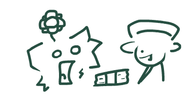

My goal is to work as an artist or art lead on either Friday Night Funkin or Minecraft
For a more in-depth look at my career goals, [[Click Here!!]]
For a timeline of how I plan to achieve this, it starts with getting a grasp on social media on a professional level
then moving on to getting a job in the industry by working in smaller studios, and finally moving on to working in larger studios.
